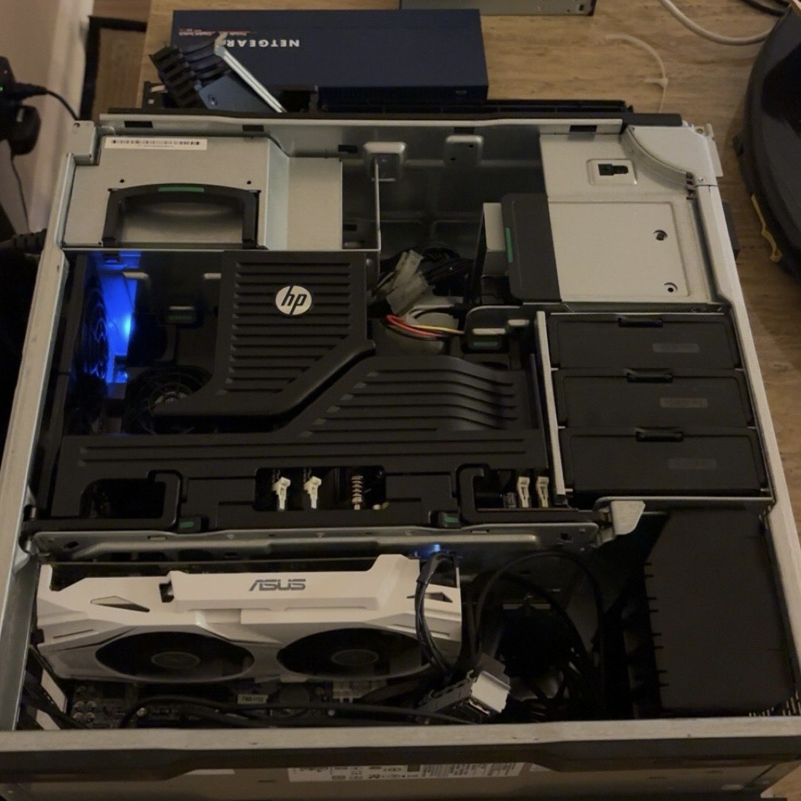

Homelab Server
Using decommissioned server hardware I architected and deployed a self-hosted media server on Proxmox VE using isolated LXC containers and Docker, orchestrating 10+ networked services (Jellyfin, automated download/indexer tooling) with GPU-accelerated transcoding via NVIDIA NVENC passthrough.